PT. ABC Sugar Refinery — Skripsi: Yusril Alfafa (Integrasi Fuzzy FMEA, Fuzzy AHP & Fuzzy TOPSIS)
Seluruh dokumentasi visual disusun runtut sesuai dengan urutan Daftar Gambar pada Laporan Skripsi:
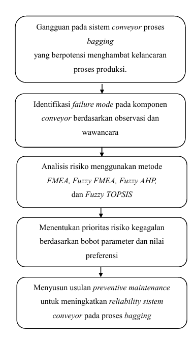
Gambar 2.1 Kerangka Berpikir (Hal. 36)
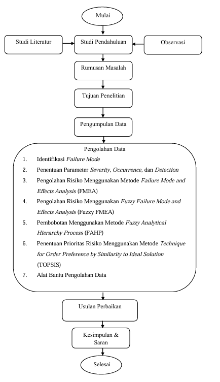
Gambar 3.1 Diagram Alir Penelitian (Hal. 37)
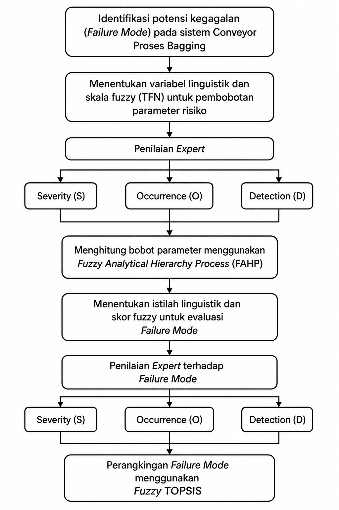
Gambar 3.2 Diagram Pengolahan Data FAHP & FTOPSIS (Hal. 42)
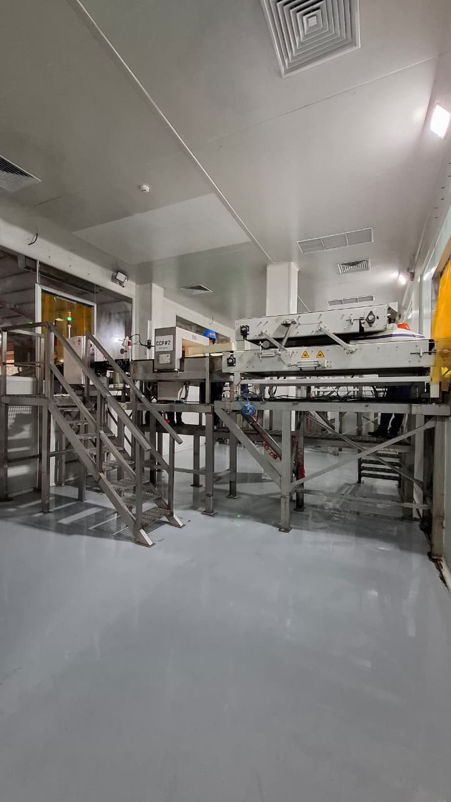
Gambar 4.1 Proses Bagging PT. ABC (Hal. 51)
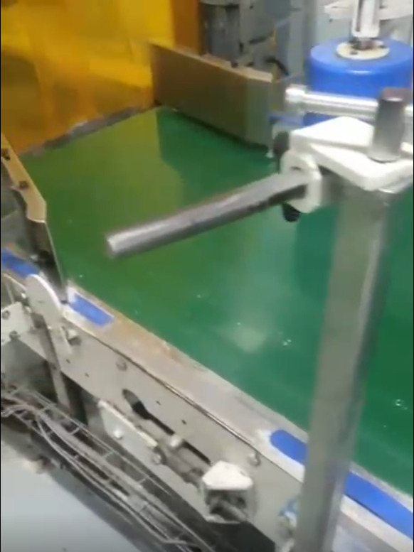
Gambar 4.2 Kondisi Gangguan Slip pada Conveyor Proses Bagging (Hal. 53)
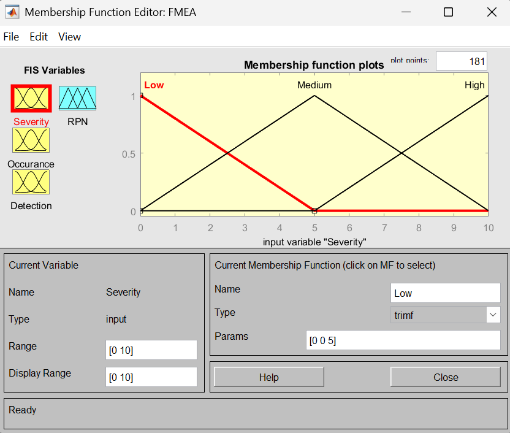
Gambar 4.3 Membership Function Variabel Severity (Hal. 59)
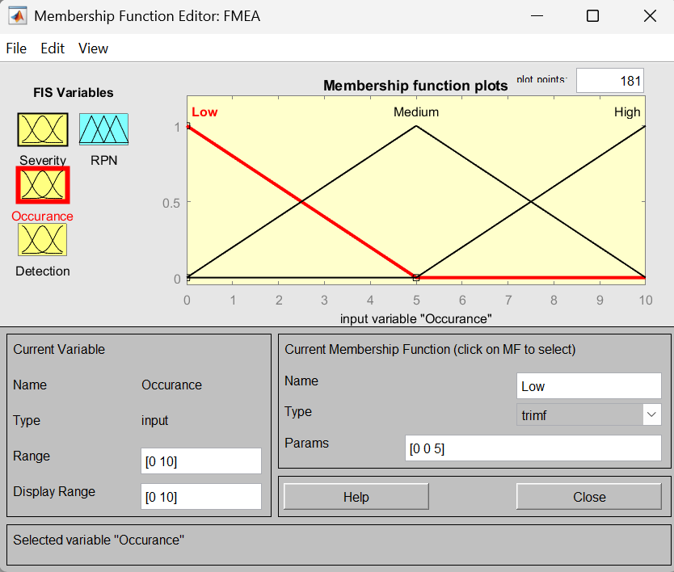
Gambar 4.4 Membership Function Variabel Occurence (Hal. 60)
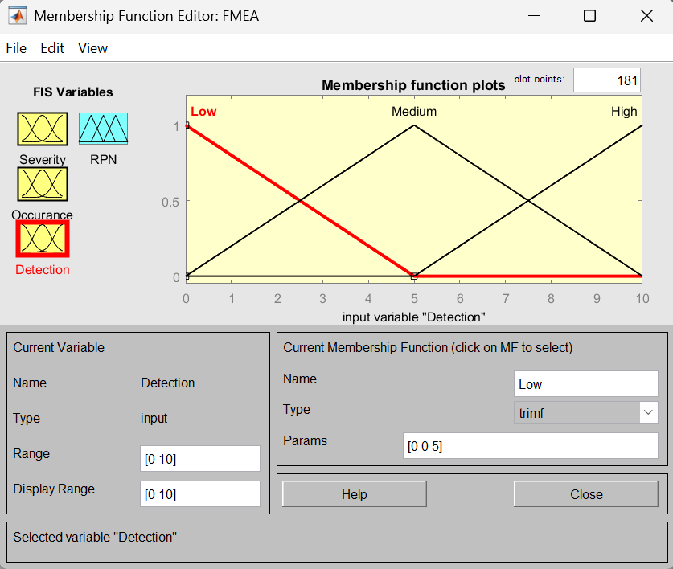
Gambar 4.5 Membership Function Variabel Detection (Hal. 61)
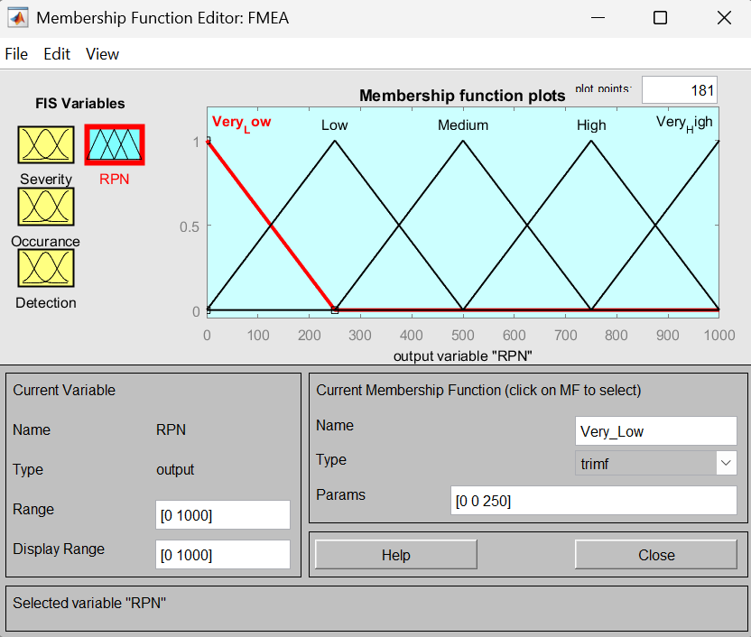
Gambar 4.6 Membership Function Variabel Output RPN (Hal. 62)
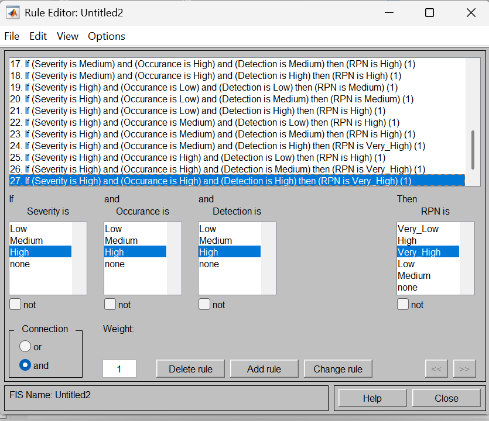
Gambar 4.7 Rule Editor Fuzzy FMEA pada MATLAB (Hal. 64)
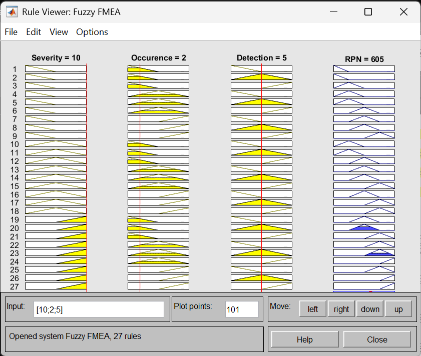
Gambar 4.8 Hasil Rule Viewer Gearbox Mati Mendadak (Hal. 66)
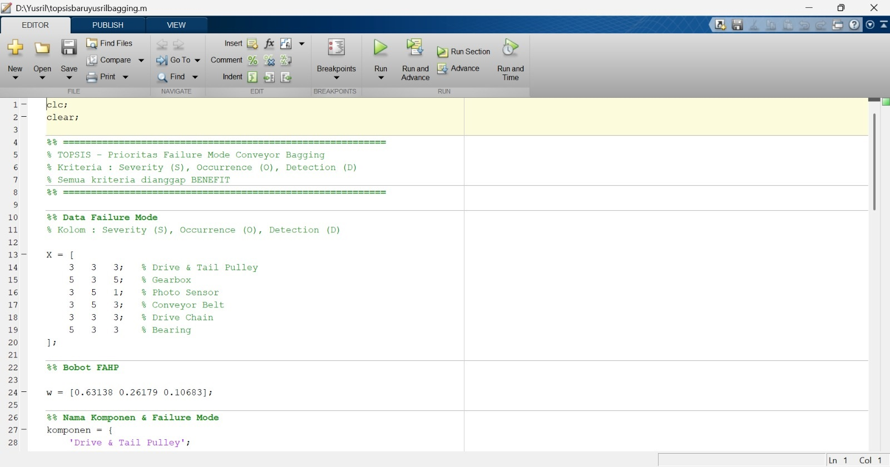
Gambar 4.9 Input Data dan Bobot Kriteria Fuzzy AHP (Hal. 78)
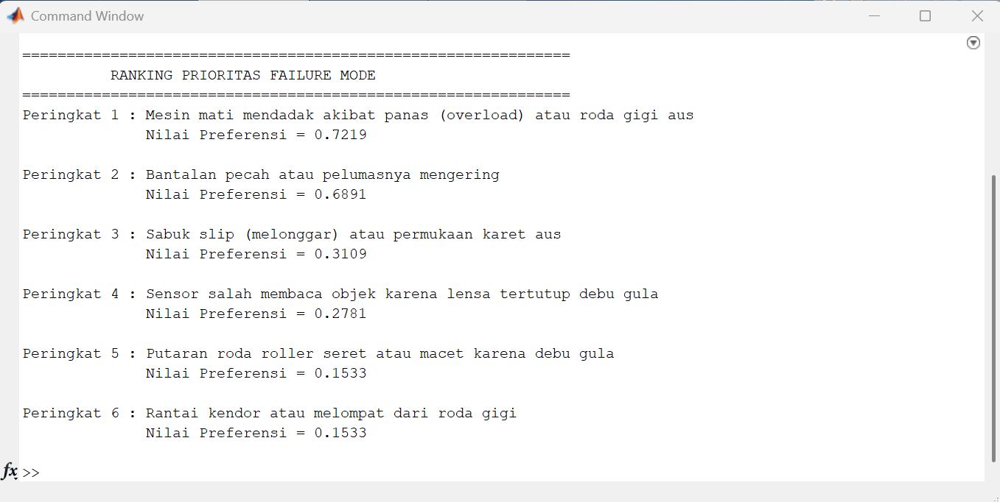
Gambar 4.10 Hasil Perangkingan Fuzzy TOPSIS pada MATLAB (Hal. 80)
Justifikasi ilmiah di balik pembobotan Fuzzy AHP berdasarkan kondisi operasional aktual di industri gula rafinasi (PT. ABC):
Narasi Ahli (Expert Judgment):
Dalam industri manufaktur yang berjalan kontinu (continuous process) seperti pabrik gula, Severity (S) mutlak sedikit lebih penting dari Occurrence (O). Dampak kerusakan fatal (seperti Gearbox aus) memicu Stop Plant total dengan kerugian finansial masif, sehingga bobot dampak (S) harus lebih diutamakan daripada frekuensi kejadian (O).
Narasi Ahli (Expert Judgment):
Occurrence (O) sedikit lebih penting dari Detection (D). Gangguan berulang secara akumulatif menurunkan efisiensi (OEE). Sementara itu, deteksi (D) di area bagging mudah diinspeksi visual oleh operator, sehingga D tidak menjadi prioritas utama.
Narasi Ahli (Expert Judgment):
Severity (S) mutlak lebih penting (Skala 5) dibanding Detection (D). Percuma jika sistem deteksi canggih (D rendah), namun tidak bisa mencegah kerusakan alat berat (S tinggi). Oleh karena itu, Severity diberi bobot absolut tertinggi (63.14%).
Komponen Drive & Tail Pulley dengan RPN tertinggi (168) turun ke peringkat 5 pada Fuzzy TOPSIS. Sebaliknya, Gearbox naik dari peringkat 3 ke peringkat 1 karena bobot Severity yang dominan.
| Rank (TOPSIS) | Kode | Komponen | Failure Mode | S | O | D | RPN (Rank Lama) | Nilai CCi |
|---|
CBM: Cek suhu & getaran mingguan menggunakan thermogun & vibration meter.
Oli: Penggantian oli pelumas gearbox setiap 6 bulan.
Greasing: Pelumasan bearing setiap 2 minggu dengan food-grade grease.
Housekeeping: Pembersihan housing dari debu gula halus setiap minggu.
Tension Check: Pemeriksaan ketegangan & kelurusan sabuk secara visual setiap minggu.